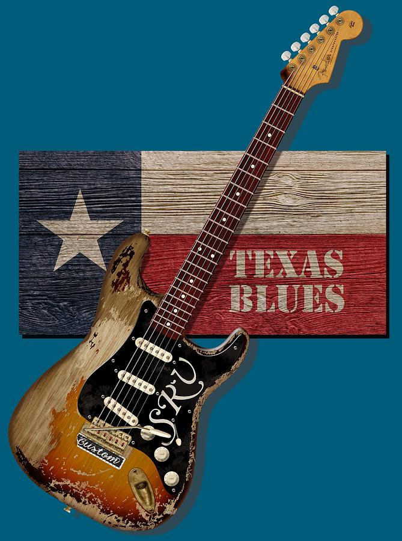

<main>
  <section class="texas conteudo">
    <h2>Texas Blues</h2>
    <div class="texto-informativo tipo-blues">
         
      <p>
        O Texas Blues surgiu no início do século XX por meio dos afro-americanos
        que estavam trabalhando nas fazendas e campos de petróleo e madeira
        serrada. O Texas Blues é um subgênero do Blues que não se limita a
        apenas artistas do Texas. Este estilo musical possui algumas diferenças
        nos seus instrumentos comparado aos outros subgêneros, e uma dessas
        diferenças é uso da guitarra elétrica.
      </p>
      
      <p>
        Blind Lemon Jefferson foi de grande importância para este gênero, pois
        ele trouxe a improvisação do Jazz e um acorde único na guitarra, durante
        a década de 20. Ele teve grandes contribuições para o Texas Blues e
        inspirou músicos, como por exemplo, Lightnin' Hopkins e T-Bone Walker.
        Outro artista que contribui para o desenvolvimento do Texas Blues foi
        Stevie Ray Vaughan, que usou diferentes tipos de solos de guitarra como
        a slide guitar e diversas melodias do Jazz.
      </p>
      <p>
        É caracterizado por ser mais “relax” e por ser tocado com mais swing,
        sendo uma junção de vários outros estilos e ritmos musicais, e teve como
        base o uso do violão acústico. A evolução do Texas Blues é perceptível,
        trocando o violão acústico pela guitarra elétrica sem perder sua
        essência ou mudar de região. Além disso, contrário ao Delta Blues, o
        violão não é usado mais só como um acompanhamento e se torna uma
        extensão da voz.
      </p>
      
    </div>
    
  </section>
</main>
